Instructions for using the Physician Handoff Worklist in Cerner to create a rounding list.
Your Experience must be set to "Hospital Medicine View" for this to work.
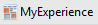
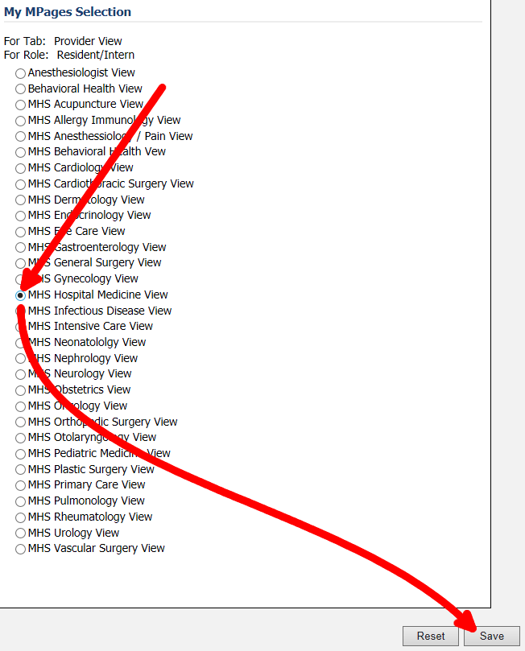
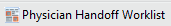
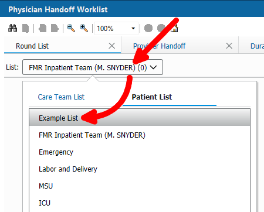
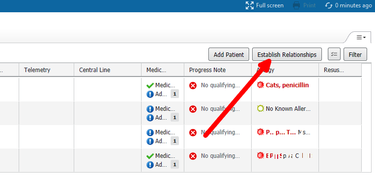
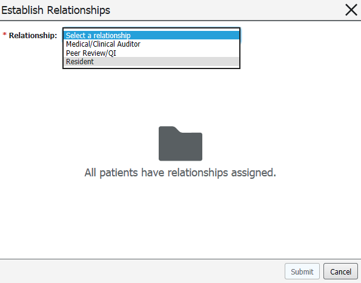
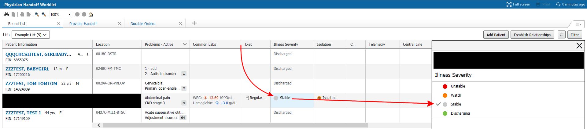
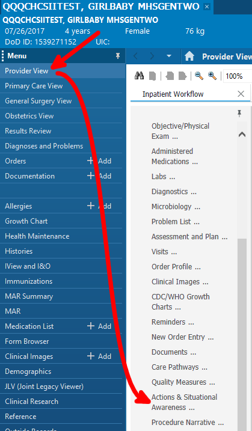
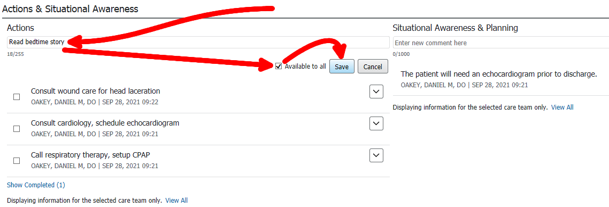
Actions and situational awareness can be edited or deleted using the dropdown arrow.
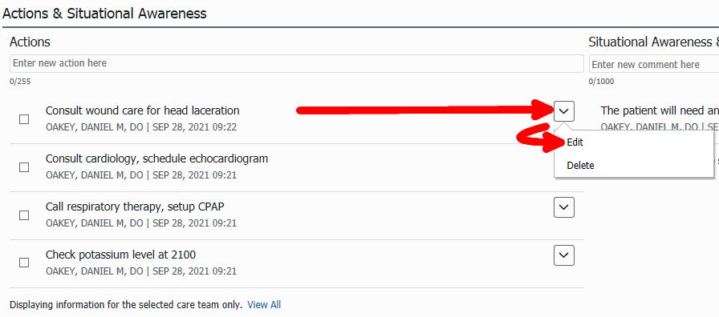
Actions can be checked off when completed using the little checkbox.
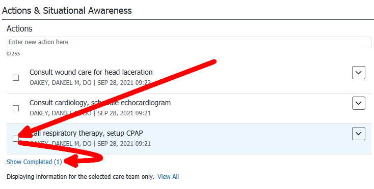
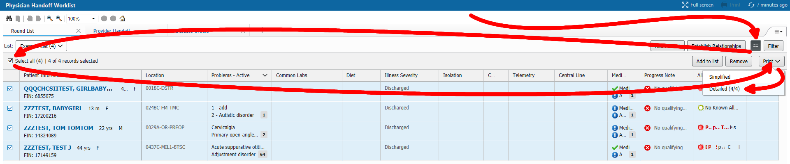
Save the PDF for long-term storage, then print.
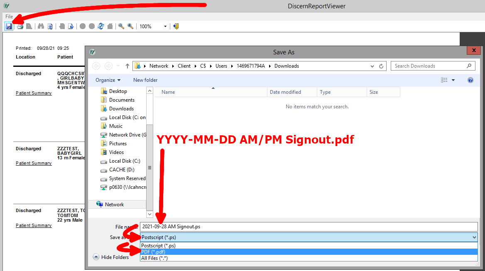